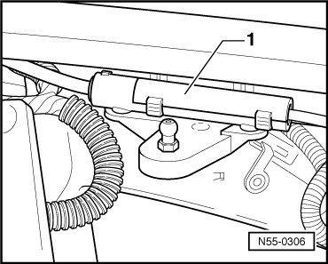
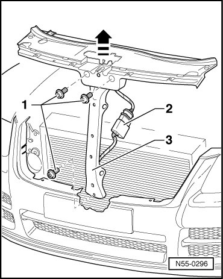
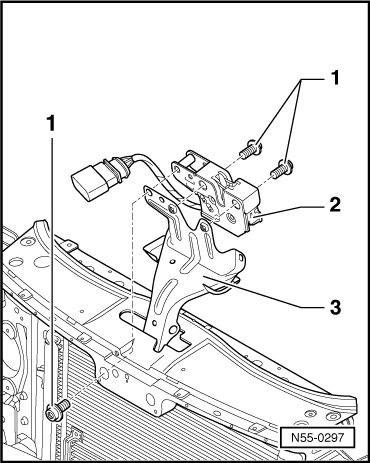
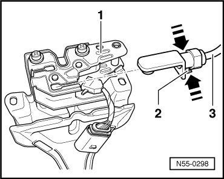

Rear Lid Lock
Hood
Rear Lid Lock
Removing
- Remove radiator grille. Refer to --> [ Radiator Grille, through 10.2006 ] Radiator Grille.
- Pull off release coupling - 1 - upward from bracket.

- Disconnect release. Refer to --> [ Release, Disconnecting ] Hood Overview
- Disconnect harness connector - 2 - for Front Hood Switch -F266-.

- Remove bolts - 1 - from lock carrier and bumper carrier.
- Lift out lock supports - 3 - with hood lock in - direction of arrow -.
• The hood lock and the lock support are shown removed from the lock carrier.
• Lock support can only be removed downward from lock carrier.
- Remove the bolts - 1 - for hood lock - 2 - of lock support - 3 - in lock carrier.

- Remove hood lock upward out of cutout in lock carrier.
- To unclip the release - 3 -, press together the tab - 2 - and the release in - direction of arrow -.

- The locking mechanism is released and release can be removed from hood lock - 1 -.
Installation
• While installing hood lock, bolts must be tightened first on lock support.
To install, perform the steps used for removal in reverse order.
Tightening specification: Bolts - 1 - 9 Nm
- Adjusting Hood, refer to --> [ Hood, Adjusting ] Hood Overview